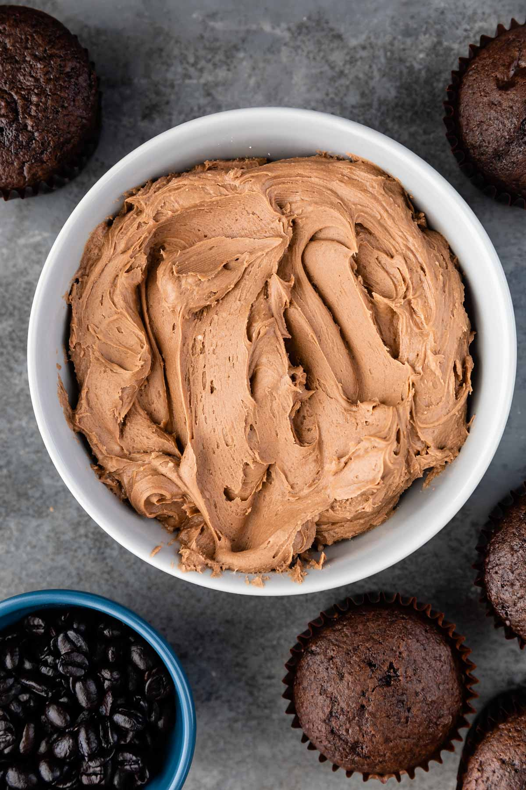

Mocha Frosting

Description
This mocha frosting is ideal for those who love adding the flavor of their morning espresso to their baked goods. Adding a twist to your average chocolate frosting, this frosting is another option for using on any chocolatey cake you like!
Ingredients
- 1 cup plus 2 tbsp non-hydrogenated vegetable shortening
- 1/4 cup plus 2 tbsp non-hydrogenated vegan margarine
- 3 3/4 cups (1 lb, 1 oz) powdered sugar
- 3/4 cup (3 oz) cocoa powder
- 3 tbsp brewed espresso, cooled
- 2-3 tbsp soymilk
Steps
- In the bowl of a stand mixer, combine the shortening and margarine and whip with the paddle attachment until completely combined. Scrape the bottom of the bowl to ensure that the ingredients are mixed thoroughly.
- On low speed, slowly add the powdered sugar and cocoa powder a little at a time
- Once the powdered sugar and cocoa powder are incorporated, add the espresso and soymilk and mix on low speed until the liquids are incorporated and the desired consistency is reached.
- Scrape the bottom of the bowl and mix on medium-high speed until all the ingredients are combined and the frosting is fluffy, about 2 minutes.